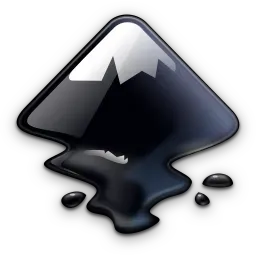

Inkscape: Professional Free Vector Graphics Editor
← Back to Open Source
Overview
Inkscape is a professional-quality free and open-source vector graphics editor that uses the W3C standard Scalable Vector Graphics (SVG) as its native format. Born from a fork of the Sodipodi project in 2003, Inkscape has matured into a powerful design tool that competes with commercial applications like Adobe Illustrator, CorelDRAW, and Affinity Designer. It runs on Windows, macOS, and Linux, and is used by graphic designers, illustrators, web designers, and hobbyists worldwide for creating everything from simple logos to complex technical diagrams and artistic illustrations.
Unlike proprietary vector editors that lock you into closed file formats, Inkscape's commitment to the open SVG standard ensures that your work remains accessible and portable. The software sports a flexible and intuitive interface with customizable toolbars, palettes, and dockable dialogs. Its comprehensive toolset includes bezier and spiro curve drawing, calligraphy tools, text support with advanced typography controls, boolean operations, path simplification, live path effects, and a powerful object transformation system. Inkscape also supports extensions written in Python, allowing users to expand its capabilities through a rich library of community-contributed add-ons.
Key Features
- Native SVG Support: Full compliance with the W3C SVG standard including SVG 1.1, SVG 2, and CSS3. This means your designs are future-proof and can be opened in any standards-compliant vector application or web browser without data loss.
- Comprehensive Drawing Tools: Pencil tool for freehand drawing with variable smoothing, Pen tool for precise bezier curves, Calligraphy tool with pressure sensitivity, and the Spiro tool for creating smooth curves. Each tool offers fine-grained control over stroke and fill properties.
- Live Path Effects: Over 50 non-destructive path effects that can be applied and adjusted in real time. These include pattern along path, bounding box, perspective/envelope deformation, lattice distortion, and many more — all fully editable after application.
- Advanced Text & Typography: Comprehensive text support with kerning, tracking, text on path, text flow in shapes, and multi-line text. Inkscape also supports variable fonts, OpenType features, and SVG fonts for flexible typography design.
Why Choose Inkscape?
Inkscape's most compelling advantage is its native use of SVG, an open standard that ensures long-term accessibility and interoperability. Unlike proprietary formats that may become obsolete or locked behind subscription paywalls, SVG files created in Inkscape can be opened in any modern web browser, embedded directly into websites, and edited in numerous other tools. This makes Inkscape particularly valuable for web designers, UI/UX professionals, and anyone who needs to produce resolution-independent graphics for digital platforms.
The software also excels at technical and precision work. Its on-canvas alignment and distribution tools, comprehensive grid and guide system, and powerful node editing capabilities make it ideal for creating diagrams, architectural drawings, and engineering schematics. Inkscape's extension system connects it to a wider ecosystem — you can import and export to dozens of formats including PDF, EPS, PostScript, DXF, AI, CDR, and many others through extensions. The active community contributes hundreds of free tutorials, templates, and extensions that continually expand what Inkscape can do, making it a constantly evolving tool that grows alongside its users.
Get Started
Visit the official website to download: https://inkscape.org/
Inkscape is free and open-source. No subscriptions, no hidden costs.